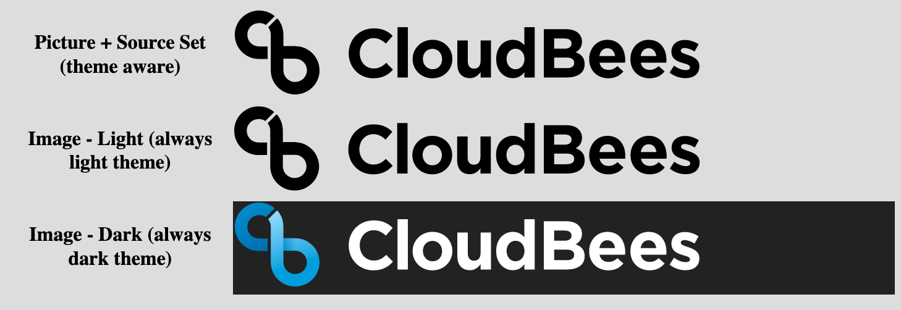

HTML and SVGs are rendered with strict CSP.
"default-src 'none' 'unsafe-inline'; img-src data: *; style-src: 'unsafe-inline""default-src 'none'; img-src data:"| Picture + Source Set (theme aware) |
|
|---|---|
| Image - Light (always light theme) | |
| Image - Dark (always dark theme) |
|
First load - on first load (easiest to see in private session)

After reload - forced or normal